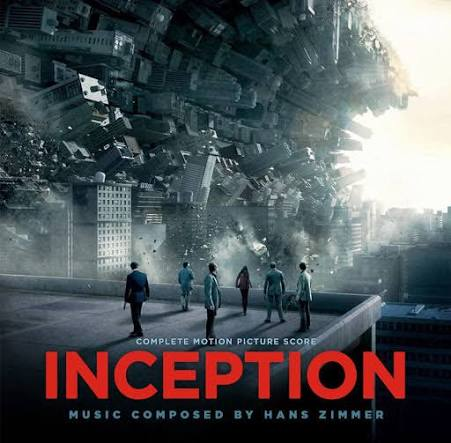
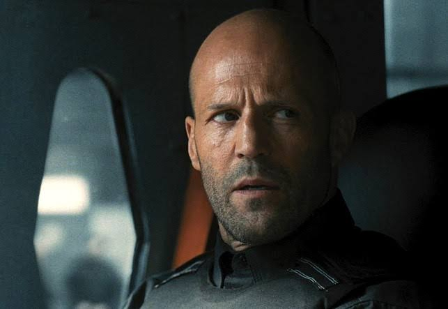

Actually, there's not much I can say except that movies and TV shows are just such a great thing.
If you need it, here's my Letterboxd Profile
btw, every picture is linked to the movie directly

DARK - "What we know is a drop. What we don't know is an ocean."
I know this isn't a movie. But this is the best series I've ever watched. And yeah, this is one of the things you need to watch more than 1 time to understand all actions.
But when you understand that everything is connected, you definetely will be mind blown.

Project Hail Mary - "Fist my Bump." (or something like that)
Wow, I really love this movie! At first I thought it would be something like 'Interstellar', but it was actually different.
It had a lot more humor, but it was still a really good movie—and in some parts, even more exciting. (We love Rocky)

Interstellar - "You have to leave something behind to go forward."
I think I don't need to explain why this movie is on this list. And the Soundtrack - ILY Hans Zimmer 😫🙏
Anyways, this is really a 10 out of 10 movie. Recommend watching this!

Inception - "An Idea. Once an idea has taken hold of the brain it's almost impossible to eradicate."
On the first time watch, i thought "WTF did I just watched?" At the second time, I thought "WTF is this Ending?"
But for real. This movie is extremely good. Sometimes I ask myself if our "reality" is real, if you understand.
What if we all live in a simulation or a dream? What if, after our death we wake up again as a 6 y/o and repeat our entire life? (we probably never find out)

Cash Truck / Wrath of Man - "A-1 and A-2 entered the right lung. B-1 penetrated the liver, and B-2 ruptured the spleen. C-1 and C-2 lacerated the heart."
Okay, this is in my Opinion one of the top 3 action movies I've watched. Why?
Because of the storytelling. It's like a puzzle. With time, you understand the plot and the important other things that are happening. (and it also has fitting music)